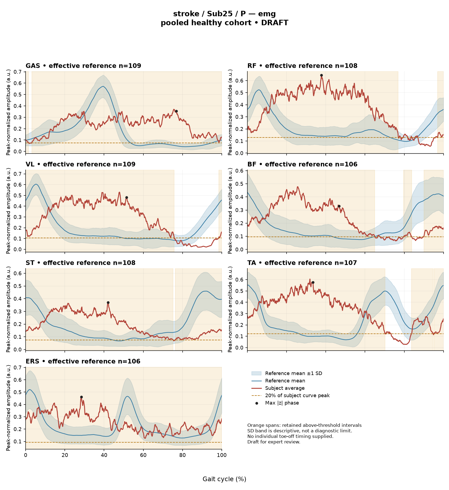

R64DAC9B0B72AF982
rater3 / 55 of 150 / Case stroke_Sub25_P / Review row 56
Report: verbatim text
Text file for exact quotations# Gait Report Interpretation — Sub25_P **Version:** limited-evidence-v3.1-candidate **Scope:** Research interpretation of a supplied quantitative summary. This is not a diagnosis, not a clinical assessment of walking ability, and not a basis for treatment selection. --- ## 1. Objective Findings **Participant and side.** Sub25_P is recorded in the stroke cohort, and the data presented here are from the **paretic** side. The analysis cycle runs from one initial contact of the paretic limb (0%) to the next initial contact of the same limb (100%); these are two successive occurrences of the same event, not a single instant. No intermediate event (toe-off or any phase boundary) is supplied, so all timing below is expressed purely as a percentage of the analysis cycle. **Spatiotemporal values as supplied.** - Gait speed 0.11 m/s, which falls in the "household ambulator (<0.4 m/s)" speed band. This label denotes a speed range only; it carries no information here about walking independence, safety, assistive-device use or real-world mobility. - Cadence 33.6 steps/min. - Step length symmetry index +8.6% using the **successive-footfall** definition. By the stated sign convention, a positive value indicates the paretic step is the **longer** of the two. The instantaneous-heel-position definition can yield a different value in some subjects and is not supplied here, so this figure should be read as definition-specific. **Reference used.** Kinematic deviation is referenced to 138 pooled healthy subjects (1001 phase points, main_cohort_excel). That cohort pools both body sides and all ages and is not age- or speed-matched to this participant. **Comparability limit (applies to every reference comparison in this report).** The healthy reference cohort's self-selected speeds span 0.80–1.79 m/s. At 0.11 m/s this participant walks far below that floor, so **no speed-matched healthy reference exists in this dataset**. Any difference from the reference therefore conflates the effects of very slow walking with stroke-related control changes, and these two contributions cannot be separated from these data. Differences from an empirical reference do not, by themselves, establish a disease effect, a mechanism or a clinical diagnosis. The pooled percentile values quoted below are calibration percentiles, not matched leave-one-out normal limits for this subject. **What is present and what is not.** - Present: sagittal-plane joint angle ROM and Gait Variable Scores for ankle, knee, hip and pelvis; a composite GPS-like score; ensemble-averaged EMG envelopes with detected intervals for GAS, RF, VL, BF, ST, TA and ERS; two co-contraction indices. - Not supplied in this input: coronal- and transverse-plane kinematics (outside the metric definition entirely); individual toe-off and any matched muscle-specific timing reference; stride-level variability; raw-signal quality checks; expert plots; age, sex and gait-event fields; time post-stroke, stroke clinical scores and non-paretic-side data. These are *not supplied to this task* — that is distinct from being documented as absent from the source release. The release-level array audit notes 614 of 700 evaluable muscle combinations, with 86 lacking valid nonzero paired samples; whether any of this subject's combinations were among those is not stated here. --- ## 2. EMG Envelope and Threshold Findings All EMG statements below are properties of the **ensemble-averaged envelope** for each muscle, under the stated rule (threshold = 20% of that curve's own peak; minimum retained interval 3% of the cycle). They are not physiological onsets, offsets, contraction durations, or evidence of inactivity outside the detected intervals, and an averaged curve cannot show that the same pattern occurred in every stride. **Amplitude normalization.** Each curve is scaled by a shared maximum across available strides for that participant, side and muscle before averaging; the released mean curves are used without further normalization. Values are therefore **relative envelope amplitudes**. They do not represent neural drive, force or strength, and muscles must not be ranked as stronger or weaker against one another on this basis. **Detected intervals and coverage (mean-envelope level).** | Muscle | Retained interval(s) | Coverage | Boundary | Peak rel. amplitude | |---|---|---|---|---| | GAS | 3%–2% (wraps) | 99% | above threshold across the cycle boundary | 0.37 | | RF | 97%–77% (wraps) | 86% | above threshold across the boundary | 0.65 | | VL | 98%–76% (wraps) | 77% | above threshold across the boundary | 0.53 | | BF | 80%–84%; 90%–65% (wraps) | 81% | above threshold across the boundary | 0.48 | | ST | 76%–75% (wraps) | 99% | above threshold across the boundary | 0.37 | | TA | 84%–95%; 95%–70% (wraps) | 89% | above threshold across the boundary | 0.60 | | ERS | 0%–100% | 100% | above threshold across the boundary | 0.46 | Every recorded channel shows a high proportion of the averaged cycle above its own 20%-of-peak threshold, and in each case the envelope remains above threshold as the curve crosses the 100%→0% cycle-defining event (initial contact of the paretic limb). For ERS the retained interval spans the full analysis window and coverage is reported as 100%; coverage figures here are rounded, so this evidence supports "no below-threshold segment was retained under the stated rule" rather than a demonstration that no individual sample fell below threshold. The same caution applies to the two 99% values (GAS, ST). BF and TA each retain two intervals, so the mean envelope for those muscles crosses the threshold more than once within the cycle. An onset expressed as 0% (ERS) is the analysis-window boundary, not a physiological onset. Because no toe-off and no matched muscle-specific normative timing are supplied, none of these percentages can be assigned to stance, swing, loading response, mid-stance or pre-swing, no conventional 60% split may be substituted, and no interval can be mapped to a functional role such as clearance, push-off or weight acceptance. Anatomical actions may be named (e.g. GAS as an ankle plantarflexor, TA as a dorsiflexor, RF/VL as knee extensors, BF/ST as knee flexors/hip extensors, ERS as an erector spinae channel), but nothing here establishes whether any of this timing is normal, early, delayed or prolonged. **Maximum |z| locations.** "Max |z|" is the largest standardized difference from the phase-specific reference mean across 1001 phase points — an extreme-value statistic, not a single-observation z-score, and not necessarily the location of peak envelope amplitude or of any gait event. "Above reference" means above the reference **mean** at that phase point, not above a healthy percentile limit. The conventional 2-SD rule does not apply: in this dataset every one of 109 healthy controls exceeds |z| = 2 on at least one muscle, and per-muscle healthy 95th percentiles for this statistic run 3.65 (ERS) to 4.61 (TA), higher still under leave-one-out. - GAS 12.1 above reference at 77%; TA 9.9 above at 33%; RF 6.9 above at 38%; VL 5.8 above at 52%; ST 4.9 above at 42% — each of these exceeds the upper end (4.61) of the supplied per-muscle 95th-percentile range, so they are large relative to the pooled healthy distribution of this statistic. - ERS 4.5 above reference at 28% exceeds the supplied ERS 95th percentile of 3.65. - BF 3.8 above reference at 47% falls **inside** the 3.65–4.61 span of per-muscle percentiles; the BF-specific percentile is not supplied, so whether it exceeds the BF healthy limit cannot be resolved from this input. Given the absent speed-matched reference, these standardized differences describe how this averaged envelope differs from a pooled, unmatched reference. They do not localize a waveform direction beyond the stated sign at that single phase point, and they do not establish pathology. **Co-contraction indices.** CCI is the Falconer–Winter index computed over the full continuous normalized envelopes (2 × common area / summed areas) across the whole cycle. It is a whole-cycle overlap index; it is not a duration of simultaneous activation, not a force measure, and not a phase-specific result. It can be non-zero even where detected bursts do not overlap, because sub-threshold envelope area contributes. Values depend on the normalization and envelope pipeline and cannot be compared with thresholds from other studies or algorithms. - **TA vs GAS = 0.71**, above the upper endpoint of the supplied healthy interval (median 0.39; 2.5th–97.5th pct 0.24–0.59). - **RF vs BF = 0.76**, inside the supplied healthy interval (median 0.68; 0.48–0.83), above the median and below the upper endpoint. Falling outside the supplied interval does not establish pathological co-activation, spasticity, stiffness or impaired motor control; falling inside it does not establish physiologically normal co-activation or normal muscle function. Both values are further limited by the absence of a speed-matched reference. --- ## 3. Kinematic and Reference Comparisons All kinematic values are **sagittal plane only**; no coronal or transverse data are included in this analysis. | Channel | Sagittal ROM | Gait Variable Score | |---|---|---| | Ankle | 8.3° | 10.66 | | Knee | 36.2° | 22.02 | | Hip | 30.2° | 16.78 | | Pelvis | 9.0° | 14.13 | **Composite (GPS-like) = 16.43**, the RMS of the four per-joint GVS values above. This is not the validated 9-variable GPS; it is computed only over the sagittal channels provided. Against the supplied composite reference (median 5.1, 95th percentile 10.7), 16.43 is above both the median and the 95th percentile. Those are pooled calibration percentiles from an unmatched cohort, not matched leave-one-out normal limits, so this indicates a large summary difference from the pooled reference waveforms rather than a graded severity classification. **Interpretive limits on these numbers.** GVS and the GPS-like composite are summary magnitudes of difference from the reference across the cycle. Neither identifies the direction of the waveform difference (e.g. more flexion vs more extension), nor the phase at which it occurs, nor which portion of the cycle contributes most. No per-joint GVS reference values are supplied, so the relative ordering here (knee > hip > pelvis > ankle) describes this subject's own profile and cannot be converted into per-joint normal/abnormal statements. ROM alone does not establish a clinical restriction: the ankle value of 8.3° is small in absolute terms, but no matched ROM reference distribution is supplied, and at 0.11 m/s the expected sagittal excursions of a speed-matched comparison group are unknown within this dataset. Again, the very low gait speed lies outside the reference cohort's range, so slow-walking effects and stroke-related changes cannot be disentangled here, and no disease effect or diagnosis follows from these comparisons. --- ## 4. Questions for Further Clinical Assessment These are open questions for the treating clinician or for further data retrieval. None presupposes that the mechanism or measurement issue named has already been observed, and none implies a treatment recommendation. 1. Can individual gait events for this trial (paretic toe-off, and contralateral events if recorded) be retrieved from the release, so that the detected envelope intervals could be located relative to actual phase boundaries rather than cycle percentages alone? 2. Is a speed-matched or slow-walking comparison dataset available? Without one, the direction and size of the differences reported here cannot be attributed to any specific cause. 3. Were the trials collected with an assistive device, orthosis, handrail or physical assistance, and over what walking distance? Such conditions, if present, would be relevant context for interpreting a 0.11 m/s speed and 33.6 steps/min cadence, and are not recorded in this input. 4. Are stride-level (not ensemble-averaged) EMG envelopes and the raw-signal quality records available for review — including electrode placement, cross-talk checks, baseline noise, and whether any channel's normalization maximum was driven by an artefact? Each of these would be needed before the high envelope coverage values are interpreted at all. 5. For each muscle, what was the absolute (un-normalized) envelope magnitude? Because the shared-maximum normalization is participant-, side- and muscle-specific, a low-amplitude channel and a high-amplitude channel can both show broad above-threshold coverage; the released relative values cannot distinguish these. 6. Is the non-paretic-side recording for this participant available for a within-subject comparison, and were both sides collected in the same session under the same conditions? 7. Were any of this subject's muscle pairings among the 86 combinations lacking valid nonzero paired samples in the array audit, and does that affect the two CCI values reported here? 8. Are the additional stroke-cohort fields (time post-stroke, clinical scores, age, sex) retrievable for this participant, to provide the clinical context that this summary does not contain? 9. Is coronal- and transverse-plane kinematic data available from the same session, given that the present deviation scores are built from sagittal channels only? 10. On clinical examination, do the ankle ROM findings correspond to a passive range limitation, and does the observed sagittal knee and hip excursion correspond to the examiner's impression during walking at this speed?
Coverage rows
| Excel row | ID | Required content | Components |
|---|---|---|---|
| 313 | R073 | Describe walking speed 0.11 m/s and that it is below the stated 0.80 m/s reference floor; no reference at this speed is supplied. | AND: displayed speed and that it lies below the 0.80 m/s reference floor, so no speed-supported healthy reference exists in this dataset. Optional: cadence, speed-band label (not a functional claim). One sentence may also serve the comparability half of G03. |
| 314 | R074 | Identify the knee as the leading GVS difference AND describe another proximal difference using hip OR pelvis. Exact GVS values are optional; identify the findings as reference-relative sagittal summary differences. | AND: knee as leading AND (hip OR pelvis). Stating which joint is larger is optional; asserting the reverse order is an error. Exact GVS values are optional; no waveform direction, phase or restriction is required. No pelvic offset or restriction inference. |
| 315 | R075 | Describe GAS envelope above its phase-specific reference mean at approximately 77% of the analysis cycle (displayed max |z| 12.1). Within each route, muscle identity AND mean-relative direction AND approximate cycle location are required. Exact max-|z| repetition is optional. | Required for each route: muscle identity AND direction relative to the phase-specific reference mean AND approximate cycle location. Optional: exact max |z| value, comparison with the supplied endpoint span (descriptive only). Prohibited: percentile classification, gait phase, physiological onset, severity. |
| 316 | R076 | Describe TA envelope above its phase-specific reference mean at approximately 33% of the analysis cycle (displayed max |z| 9.9). Within each route, muscle identity AND mean-relative direction AND approximate cycle location are required. Exact max-|z| repetition is optional. | Required for each route: muscle identity AND direction relative to the phase-specific reference mean AND approximate cycle location. Optional: exact max |z| value, comparison with the supplied endpoint span (descriptive only). Prohibited: percentile classification, gait phase, physiological onset, severity. |
| 317 | R078 | Describe the supplied successive-footfall step-length index 8.6% and its meaning: the paretic step is longer. | AND: displayed index and the direction supported by its sign. Optional: formula, definition wording. Acceptable phrasing for small displayed values: "a small difference with the paretic step slightly shorter/longer" (not a cutoff). Prohibited: restating the index as a percentage shortening (E01), severity grades, whole-gait symmetry generalization (E07 issue, not an omission). |
| 318 | G03 | Express a meaningful limitation of reference comparability AND why the comparison cannot establish disease effects or clinical diagnosis; for controls it cannot establish disease or overall normality. One statement may also support a case requirement. | AND: comparability and inference limitations |
Exact system input
Saved fileDraft a research gait-report interpretation for a physical therapist or physiatrist using only the supplied quantitative summary. This is a limited-evidence interpretation task, not diagnosis or treatment selection. Rules: - Describe the participant's actual group and side, available findings, and missing channels accurately. Healthy-group membership does not prove normal physiology; deviations from an empirical reference do not by themselves establish disease. - Treat detected EMG intervals and coverage as properties of an averaged envelope under the stated threshold and duration rule. Do not convert them into physiological onset, offset, duration, continuous contraction, or inactivity outside the intervals. You may describe reported coverage, retained intervals and boundary continuity at the mean-envelope level. Do not infer the same pattern in every individual stride. Say no below-threshold segment only when the supplied evidence establishes that; a rounded coverage value or no retained interval alone does not establish it. - Individual toe-off and matched muscle-specific timing references are not supplied in this task. Use percentages of the analysis cycle. When the input explicitly identifies an initial-contact boundary, you may name that boundary or describe numerical proximity to it. Do not assign stance/swing, loading response, pre-swing, mid-stance or another event to a percentage, or substitute a conventional 60% split. Anatomical muscle actions may be named, but do not map an interval to a gait-phase function such as clearance, push-off or weight acceptance. Do not characterize timing as normal, early, delayed or prolonged without the required evidence. - Respect the supplied normalization method. Relative envelope amplitude is not strength or force, and average curves do not establish stride-to-stride variability. - Report CCI as a whole-cycle overlap index of normalized EMG envelopes. You may compare it with the supplied empirical interval or a supplied median, including proximity to an endpoint. Do not invent an unavailable median. Being within that interval does not establish physiologically normal co-activation or normal muscle function; being outside it does not establish pathological co-activation, stiffness, impaired control or a diagnosis. CCI is not simultaneous activation time, muscular force or a phase-specific result. It depends on normalization and envelope methods; do not transfer values or thresholds from other studies or algorithms. - Describe GVS and GPS-like as summary differences from the stated reference. Neither localizes waveform direction or phase; ROM alone does not establish a clinical restriction without an appropriate comparison. Do not treat pooled calibration percentiles as matched leave-one-out normal limits. - Where using a reference comparison, convey both limited comparability and the inability to establish a disease effect or clinical diagnosis from that comparison. One clear explanation per report is enough; age and speed need not be recited as separate checklist words. A speed inside an overall range does not prove that an appropriate matched reference exists. Apply these limits to controls as well. - The location of maximum |z| is the largest standardized difference from the reference, not necessarily the time of peak envelope amplitude or a gait event. Above/below reference in an EMG row means relative to the phase-specific reference mean at that location, not relative to a healthy percentile limit. - Preserve numerical direction and the displayed precision. Do not invent values, clinical severity grades, statistical significance, or unavailable reference values. Descriptive comparisons with supplied values remain allowed. Near-boundary rounded values do not justify classifying hidden unrounded values. - Clinical follow-up questions may ask whether a mechanism or measurement issue exists; do not presuppose it has already been observed. Do not recommend treatment. If EMG is unavailable, section 2 may simply state that envelope timing, amplitude and CCI cannot be assessed. Reference-only plots do not provide patient EMG. Use exactly these four sections: 1. Objective Findings 2. EMG Envelope and Threshold Findings 3. Kinematic and Reference Comparisons 4. Questions for Further Clinical Assessment
Exact case input
Saved fileCandidate interpretation version: limited-evidence-v3.1-candidate
Draft the four-section report using only this subject's supplied evidence.
Metric definitions (read before interpreting any number below):
- All joint angles and ROM values are SAGITTAL PLANE only. Coronal/transverse data are not included.
- The released EMG curves are ensemble-averaged envelopes. For each participant and recorded muscle, normalization uses a shared maximum across the available strides before averaging; individual strides are not independently rescaled to their own peaks. This pipeline uses the released mean curves without further amplitude normalization. In the checked stroke release, the denominator is participant-, side-, and muscle-specific; it is not shared between sides. The local array audit verified 614 evaluable combinations, not all 700; 86 lacked valid nonzero paired samples. Amplitudes are relative envelope values, not absolute neural activation, force, or strength. Do not rank muscles as stronger or weaker from these amplitudes, or infer stride-to-stride variability from an average curve.
- Above-threshold intervals are the regions where the averaged envelope exceeds 20% of that curve's own peak, minimum retained interval 3% of the cycle (by sample count). An interval written as (X%-Y%) with X > Y wraps across the 100%->0% cycle boundary (envelope remains above threshold across the cycle-defining event). An onset of 0% is the analysis-window boundary, not necessarily a physiological onset. "No interval detected" means no region met the threshold + duration criteria; it does NOT mean the muscle is inactive or non-functional.
- CCI is the Falconer-Winter co-contraction index computed on the full continuous envelopes (2*common area / summed areas), so it can be non-zero even when the DETECTED burst intervals of the pair do not overlap (sub-threshold activity contributes).
- The composite kinematic deviation score is the RMS of the per-joint Gait Variable Scores over the sagittal channels provided ("GPS-like", not the validated 9-variable GPS).
- Step length symmetry index: 200*(paretic - non-paretic)/(paretic + non-paretic), in %. NEGATIVE means the paretic-side step is SHORTER. Two operational step-length definitions exist (successive-footfall: each heel's position at its own initial contact; instantaneous: both heels at the same instant) and give different values for some subjects -- the definition actually used is stated next to the symmetry value.
- "Max |z| deviation" is the LARGEST absolute z-score across all 1001 phase points of the cycle, comparing this curve to the healthy-cohort mean/SD at each phase. This is an extreme-value statistic, NOT a single-observation z-score: in this dataset every one of 109 healthy controls exceeds |z| = 2 on at least one muscle, and per-muscle healthy 95th percentiles for this statistic run 3.65 (ERS) to 4.61 (TA) -- higher still under leave-one-out. Do not label a value abnormal by the conventional 2-SD rule; use the healthy reference range given per muscle where provided.
- Healthy-cohort CCI reference (this dataset): RF-vs-BF median 0.68 (2.5th-97.5th pct 0.48-0.83); TA-vs-GAS median 0.39 (0.24-0.59). Composite score reference: median 5.1, 95th percentile 10.7.
- COHORT BACKGROUND (calibration context, not necessarily the exact reference used for this subject -- the actual reference composition is stated in a dedicated line with the subject data below): the full healthy cohort is 138 subjects for kinematics, effective n = 106-109 per muscle for EMG (29 controls have no usable EMG; completeness varies by age), pooling both body sides and all ages; it is not age- or speed-matched to this subject. A leave-one-out run uses one subject fewer than these counts.
- SPEED SUPPORT LIMIT (applies to most stroke subjects in this dataset): the healthy reference cohort's self-selected walking speeds span 0.80-1.79 m/s. If this subject's gait speed is below 0.80 m/s, NO speed-matched healthy reference exists in this dataset -- 41 of the 50 stroke subjects are below that floor. Deviations from the reference then conflate slow-walking effects with stroke-specific control changes, and the two cannot be separated from these data. Describe deviations from the reference as such; do not attribute them wholly to stroke pathology.
- Additional source fields are outside this input. Age, sex and gait events may be available in the release; time post-stroke, stroke clinical scores and a non-paretic-side designation apply only to the stroke cohort, as applicable. Do not claim every listed field exists for every participant. Distinguish not supplied, not applicable and documented absent recordings.
The released paretic-side cycle runs from initial contact of that limb at 0% to its next initial contact at 100%. The cycle boundary may be called initial contact; the endpoints are successive occurrences, not one instant. No intermediate event or phase boundary is supplied.
Model-visible information boundary: the summary contains mean-curve metrics and algorithm-detected intervals, not individual toe-off, matched normal muscle timing, stride-level variability, raw-signal quality checks, or expert plots. Information not supplied here must not be described as absent from the source dataset. Gait-cycle percentages alone do not identify gait phases.
Subject: Sub25_P (group: stroke, affected side: paretic)
Gait speed: 0.11 m/s (household ambulator (<0.4 m/s)) [The ambulation label denotes a speed band only, not measured walking independence, safety or real-world community mobility.]
Cadence: 33.6 steps/min
Step length symmetry index: 8.6% (step-length definition: successive_footfall)
Composite kinematic deviation score (GPS-like): 16.43
Deviation reference actually used for this subject: 138 healthy subjects (pooled), 1001 phase points, source: main_cohort_excel.
EMG envelope findings:
- GAS: above-threshold interval(s) 3%-2% (wraps cycle boundary), 99% of cycle above threshold, above threshold across cycle boundary, peak normalized amplitude 0.37, max |z| vs healthy reference: 12.1 (above reference, at 77% of cycle)
- RF: above-threshold interval(s) 97%-77% (wraps cycle boundary), 86% of cycle above threshold, above threshold across cycle boundary, peak normalized amplitude 0.65, max |z| vs healthy reference: 6.9 (above reference, at 38% of cycle)
- VL: above-threshold interval(s) 98%-76% (wraps cycle boundary), 77% of cycle above threshold, above threshold across cycle boundary, peak normalized amplitude 0.53, max |z| vs healthy reference: 5.8 (above reference, at 52% of cycle)
- BF: above-threshold interval(s) 80%-84%; 90%-65% (wraps cycle boundary), 81% of cycle above threshold, above threshold across cycle boundary, peak normalized amplitude 0.48, max |z| vs healthy reference: 3.8 (above reference, at 47% of cycle)
- ST: above-threshold interval(s) 76%-75% (wraps cycle boundary), 99% of cycle above threshold, above threshold across cycle boundary, peak normalized amplitude 0.37, max |z| vs healthy reference: 4.9 (above reference, at 42% of cycle)
- TA: above-threshold interval(s) 84%-95%; 95%-70% (wraps cycle boundary), 89% of cycle above threshold, above threshold across cycle boundary, peak normalized amplitude 0.60, max |z| vs healthy reference: 9.9 (above reference, at 33% of cycle)
- ERS: above-threshold interval(s) 0%-100%, 100% of cycle above threshold, above threshold across cycle boundary, peak normalized amplitude 0.46, max |z| vs healthy reference: 4.5 (above reference, at 28% of cycle)
Co-contraction indices:
- TA_vs_GAS: CCI = 0.71
- RF_vs_BF: CCI = 0.76
Joint kinematic findings (sagittal plane):
- AnkleAngles: range of motion 8.3 deg, Gait Variable Score 10.66
- KneeAngles: range of motion 36.2 deg, Gait Variable Score 22.02
- HipAngles: range of motion 30.2 deg, Gait Variable Score 16.78
- PelvisAngles: range of motion 9.0 deg, Gait Variable Score 14.13Reference card
Saved file# Reference context: stroke/Sub25_P Mean/SD reference: 138 controls; method pooled; exclusions: []. Effective reference counts: GAS=109, RF=108, VL=109, BF=106, ST=108, TA=107, ERS=106, AnkleAngles=138, KneeAngles=138, HipAngles=138, PelvisAngles=138. The exact system and user input files define what the model receives. The EMG and kinematic plots are supplementary expert evidence, not model inputs. The plotted mean plus/minus one SD is descriptive, not a clinical normal band. Negative lower EMG bands can result from mean minus SD; they do not imply negative recorded EMG. The max-|z| p95 span in the input is pooled calibration context. Complete muscle-specific LOO thresholds are not supplied; an appropriately indeterminate classification is allowed. Controls are excluded from their own mean/SD reference, but cohort-level calibration has prior reference-data reuse. It is not an independent matched clinical limit. GPS-like is a four-channel sagittal composite, not the validated nine-variable GPS. The pooled median/p95 background is not a matched LOO normality boundary. CCI uses continuous normalized envelopes over the whole analysis cycle. An empirical interval comparison does not establish normal muscle function. Threshold intervals and rounded coverage describe the averaged envelope. Rounded 100% coverage and one interval do not prove absence of short below-threshold gaps. Use the group-specific cycle and normalization provenance in the actual input. No individual intermediate gait events or matched normal muscle timing are supplied. Administrative age and published bilateral speed are not added to this input. Expert-visible plots do not justify requiring unseen direction, phase or morphology. For a new-case requirement, cite exact input evidence. Select clinically useful descriptive content without inferring a diagnosis or severity from rank alone.
Expert reference curves
Only text inputs were supplied to the model. Do not require curve-only findings.
EMG

Kinematics